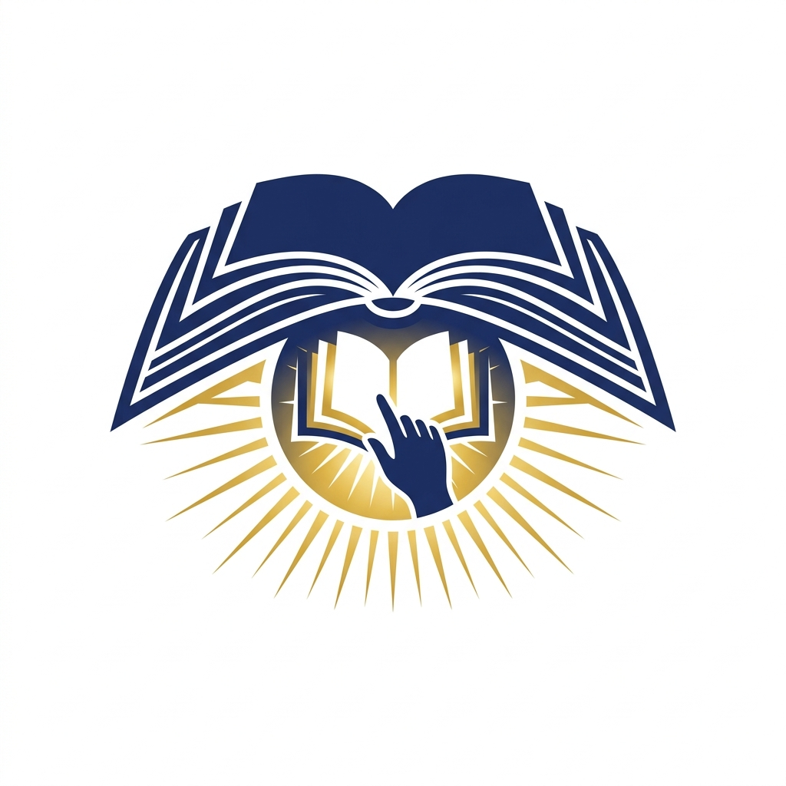

支持越南先天性失明儿童教育
您的每一份关注，都在改变一位视障儿童的命运
由于教材更新快，盲文印制周期长，我们招募声音温暖的志愿者，将最新版的中小学教材及课外读物录制成有声书，让失明孩子可以无障碍地“读”书。
搭建在线服务平台。当孩子们在学习中遇到疑难公式或不懂的概念时，可以通过语音提问，我们的特教老师和志愿者会在24小时内用精心录制的语音详解做出回复。
在缺乏经费的特教学校或普通小学的残疾资源班中，捐建微型盲文阅览角，配备盲文书籍、盲人打字机和盲用听书机，打通学习物理壁垒。